Internal process playbook
Everything we make — wireframes, designs, the build itself — is made in code and presented in Figma, where the client sees it and comments. That's why a content change takes minutes, not hours. Seven phases, taught from the Gerotech redesign.
Open (45s). This is a process deck. Gerotech is the worked example; the seven phases are the method.
Land the shape early: Figma is the room the client lives in, code is the engine, and the two run together from the design phase onward.
The process at a glance
The design is bespoke enough that a page builder would fight it, the client needs to edit their own content, and the project will grow after launch.
Walk the seven phases — one line each. This is the map; the rest of the deck is the detail.
Phases 1–3 are the ones teams skip when they're in a hurry. Skipping them is what makes phases 4–5 expensive.
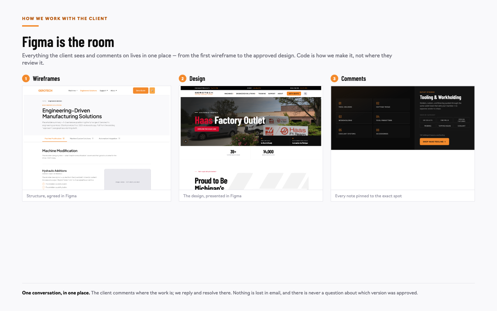
This slide sets up everything after it. Figma is where the client sees and comments on the work — wireframes, moodboards, designs, all of it.
Say it plainly: Figma is the room. Code is how we make it, not where they review it.
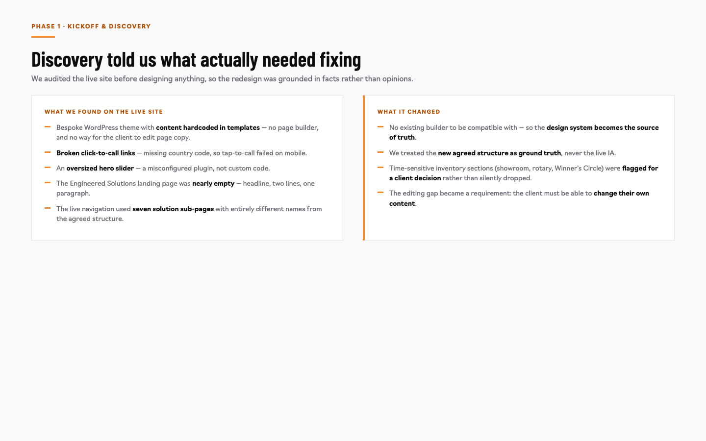
Phase 1. We audit the live site before designing anything, so the redesign is grounded in facts.
The finding that shaped Gerotech: the client could not edit their own page content. That became a hard requirement for the build.
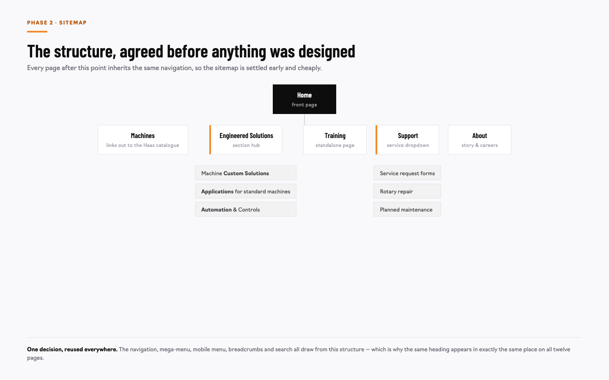
Phase 2. The structure is agreed before any design work, when changing it is free.
One decision here gets reused everywhere — navigation, mega-menu, mobile menu, breadcrumbs, search.
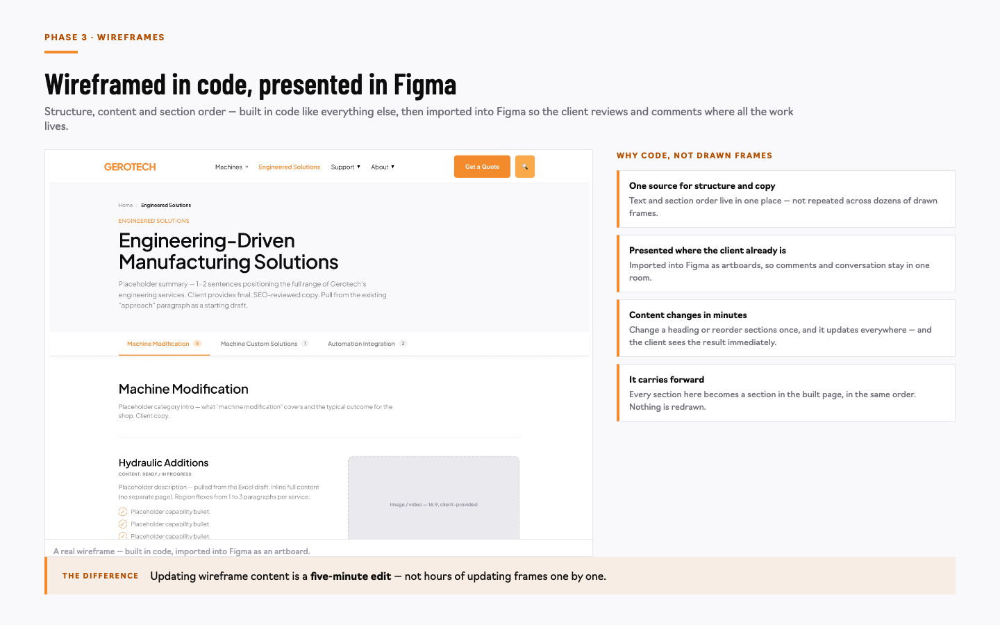
Phase 3. Structure before style. Wireframes go into Figma, so the client reviews and comments on them there.
Copy and section order get settled while changes are still cheap. Every section here becomes a section in the built page, in the same order.
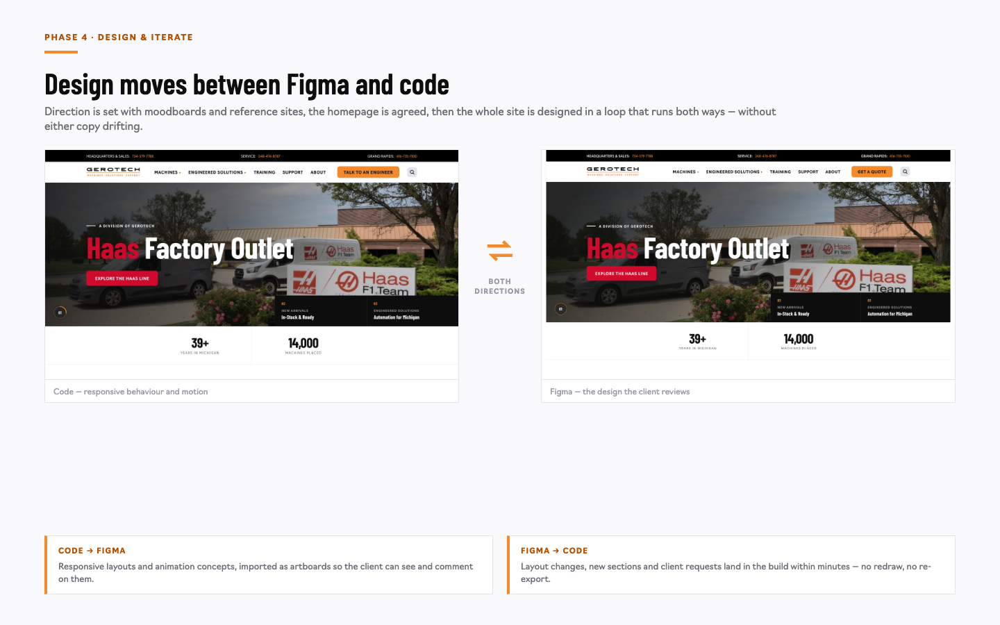
Phase 4 — the heart of the method. Moodboards and reference sites set the direction; the homepage is agreed; then every page is designed in a loop between Figma and code.
Neither tool is doing the other's job: Figma is where the design is presented and discussed, code is where responsive behaviour and motion are worked out.
Because it runs both ways, neither copy drifts.
Phase 4 · the engine
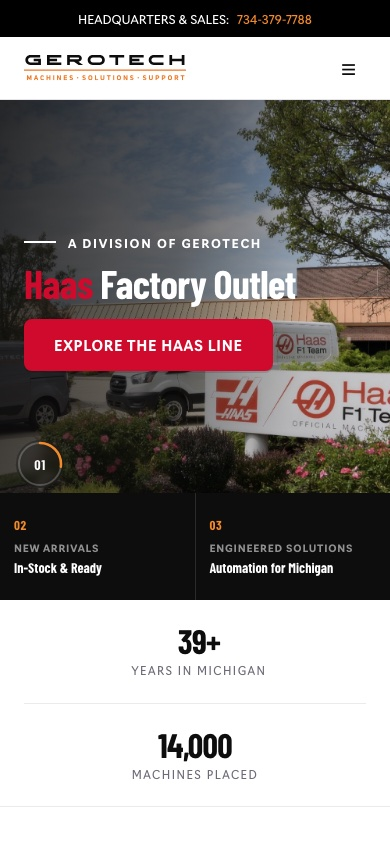
The design starts behaving like the finished thing, so review is about specifics rather than taste.
Frame the prototype correctly: it isn't a rival to Figma. It's how we settle the things Figma is bad at judging — responsive behaviour and motion.
Also make the sequencing clear: internal until design, client-facing from design onward.
Phase 4 · continued
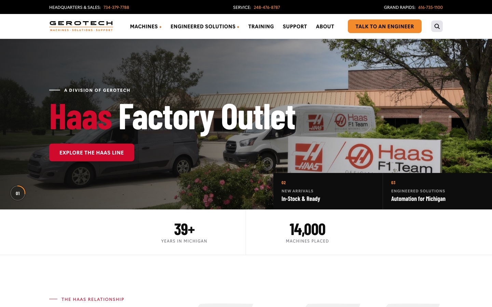
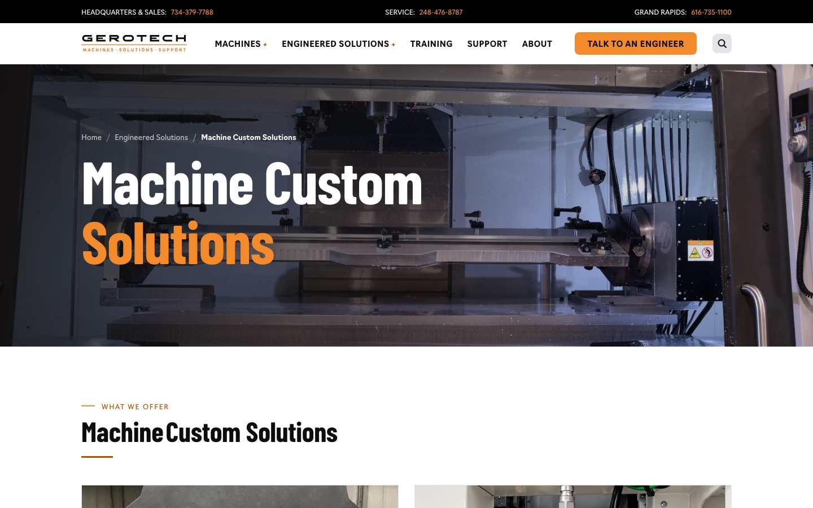
Twelve designed pages, one system — and no page looks like a one-off.
The commercial point: a shared style guide is what makes the tenth page as fast as the second.
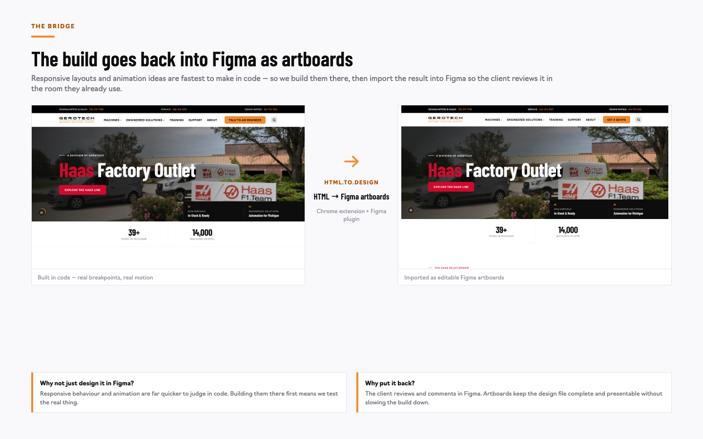
The bridge that makes the two-tool approach work. Work built in code goes back into Figma as editable artboards, so the client reviews it in the room they already use.
This is the piece people miss: it's not "design in Figma or code". It's code for the hard-to-judge parts, back into Figma for the conversation.
Tool: html.to.design — a Chrome extension plus a Figma plugin that converts HTML into editable Figma artboards.
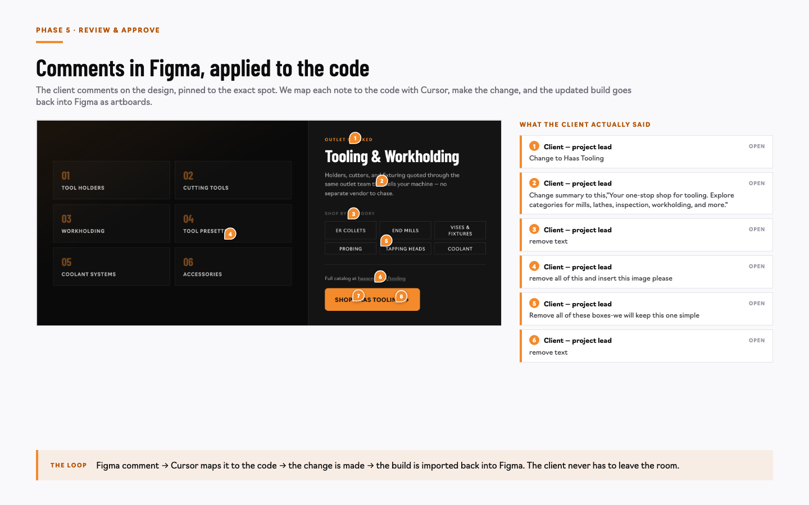
Phase 5. One feedback channel, in Figma: notes attach to the exact spot, and each becomes a tracked item with an owner.
Real comments from the Gerotech file. The benefit: a long review cycle never turns into an argument about what was agreed.
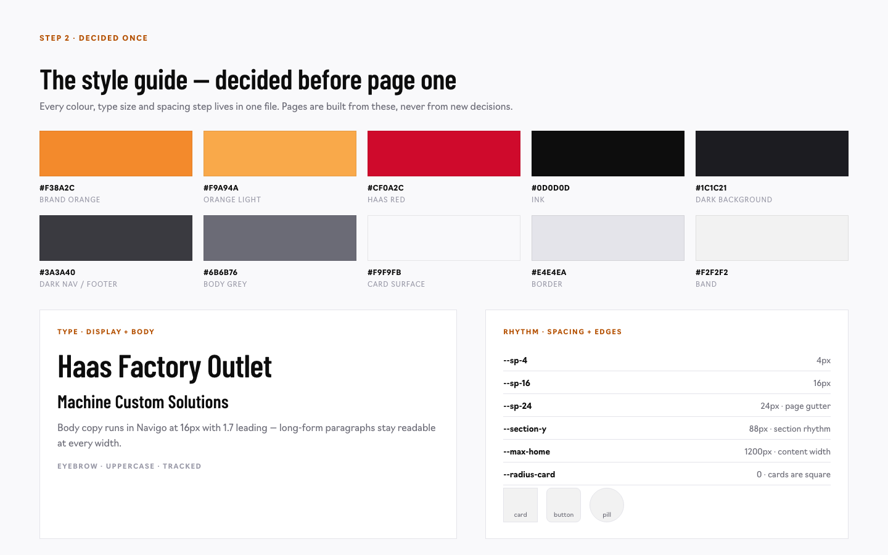
Runs across every phase. Decide the rules once — colour, type, spacing — then every page is a variation.
Avoid systems vocabulary out loud. Say "we decided the rules once". This is what stops page twelve drifting from page two.
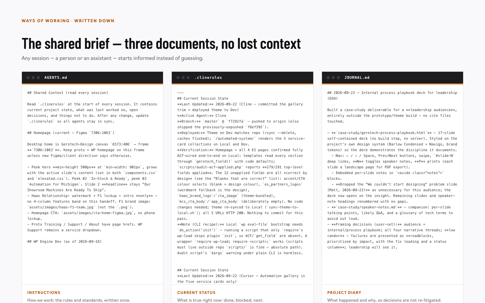
Runs across every phase. Three ordinary documents — not software. Instructions (how we work), current status (what's true now), project diary (what happened and why).
This is what lets several people and several AI assistants work on one project without losing state.
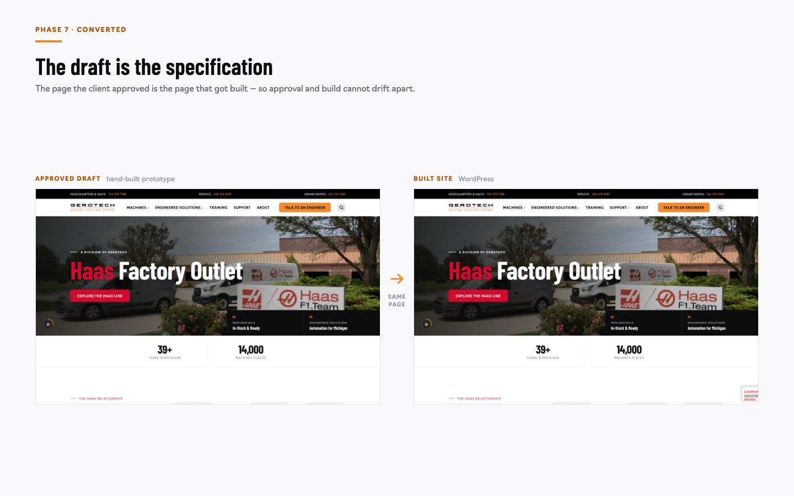
Phase 6 — the payoff. Because the design was already working code, conversion is translation rather than reconstruction. The page the client approved is the page that ships.
Technically the build target is a kickoff decision — structured fields on the client's existing theme by default, or a page builder if the client wants one. The conversion work is the same either way, and the process never depends on it.
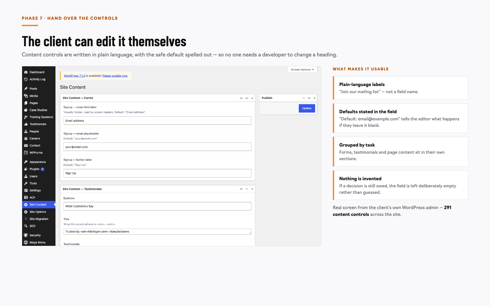
What the client gets. They edit their own content without calling us. Two habits make it usable: labels in plain language, and the safe default stated inside the field.
291 content controls across the site. If a decision is still owed, the field is left empty rather than guessed.
Phase 7 of 7
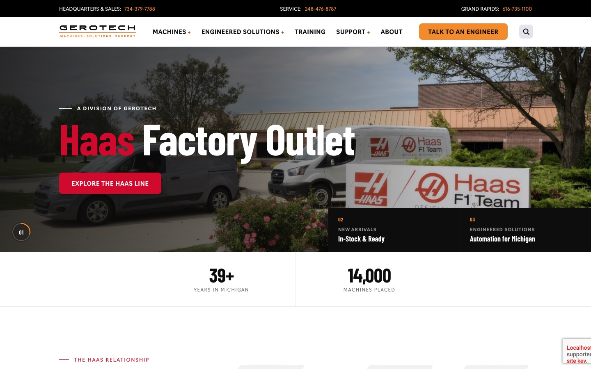
The complex functionality clients actually need — integrations, dynamic data, quoting flows, CRM and ERP connections — on top of a front end that already works.
Phase 7. Dev doesn't start from a static mockup and a blank template. They start from working pages and add the hard parts.
This is the sentence to land: we pass to dev a fully designed front end that is ready for the more complex functionality our clients need.
The payoff
Bespoke sections aren't compromised to fit a tool's stock components. The design system stays the source of truth, whichever build target is chosen.
Structured fields with plain-language labels, so everyday edits don't need a developer — and that holds with or without a page builder.
A designed, working front end ready for the complex functionality clients need — not a folder of mockups.
A choice, not a constraint. It's settled at kickoff — structured fields by default, or a page builder if the client wants one — and the process doesn't change either way.
The point of this slide: the process is independent of the WordPress build. Nothing before this point changes based on the build target.
The build target is agreed at kickoff, so it is never a surprise mid-project. If the client wants a page builder, they can have one — the design system, the structured fields and the QA reference all still apply.
Do not argue licence costs on this slide. That is a project-specific budget conversation, not part of the process.
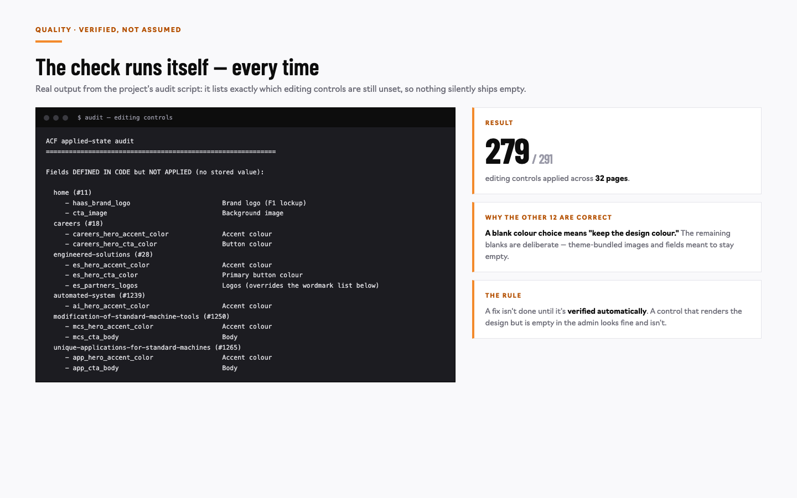
The rule that prevents the worst failure: a control can render the design perfectly while being empty in the admin. Nothing looks broken — which is why it gets missed.
Real output: 279 of 291 controls applied. The other 12 are correct by design — a blank colour choice means "keep the design colour".
One page to keep
The slide to keep. Everything before it is justification; everything after is next steps.
Read the nine items aloud, slowly.
Watch out for these · prioritised by impact
| Roadblock | Why it matters | The fix we now apply | Status |
|---|---|---|---|
| Editing controls looked empty while the site looked right | The client couldn't update their own content — and nothing appeared broken | 1. Every control is verified automatically | Fixed |
| A routine save in the admin wiped chosen colours | The approved design drifted with no warning | 1. Risky defaults removed; blank means "leave as designed" | Fixed |
| Changing the design didn't change the live page | Two copies of the truth | 1. One rule — saved content wins — applied with safe, repeatable fixes | Fixed |
| The test site drifted from what was approved | An unreviewed change could have gone live | 2. Save to the project before publishing; compare file by file | Fixed |
| A live older page looked like a duplicate | We nearly removed a page the client still uses | 2. Compare full web addresses, never just page names | Prevented |
| Context lost between sessions | Work had to be rebuilt from scratch each time | 3. The shared brief — instructions, status, diary | Fixed |
| Some fonts quietly fell back to a default | Inconsistent typography across pages | 3. Audited which fonts were actually loading | Fixed |
Priority key: 1 = could have blocked the client from editing, or damaged the approved design. 3 = friction. Every row leads with the fix.
The two "silent" roadblocks are the most instructive — they looked fine on screen. That's why the automated check exists.
What it produced
The process, the checklist, the style guide and the automated check — all reusable on the next engagement.
Frame each number as a consequence of the process, not a trophy. If asked about 291: those are controls the client can edit without calling us.